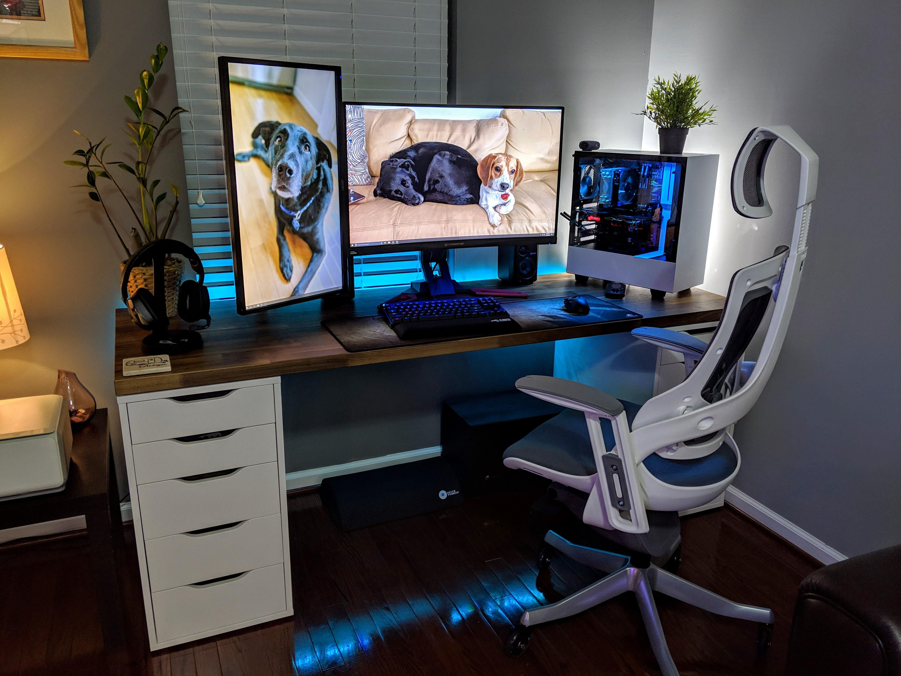

Exposición de un T-Rex en el museo de la Universidad de Manchester.
Exposición de un T-Rex en el museo de la Universidad de Manchester.
Poner un simple vídeo en HTML:
Vídeo de un simpático conejo
Contenido en diferentes formatos:
Más atributos para vídeos:
Elemento Audio:
Subs a un medio de reproducción:
Video de Youtube
SVG: un circulo y un rectangulo
Insertar SVG
Compatibilidad con todos los navegadores
Mi SVG: paisaje "hola mundo!"
Not Responsive HTML:

Responsive HTML:
ajuste constante:
Adaptacion sin condiciones:(carga la primera que lee???)
Picture: mostrar bien el objetivo
imagen no adaptativa:

imagen adaptativa: objetivo, enfocar solo el escritorio